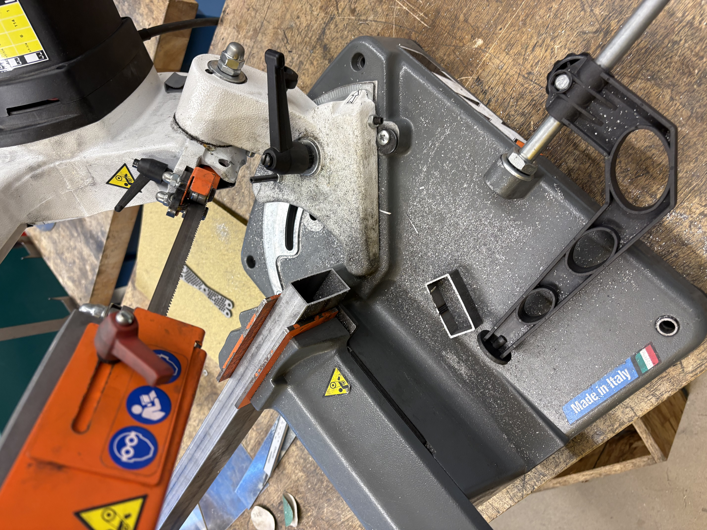
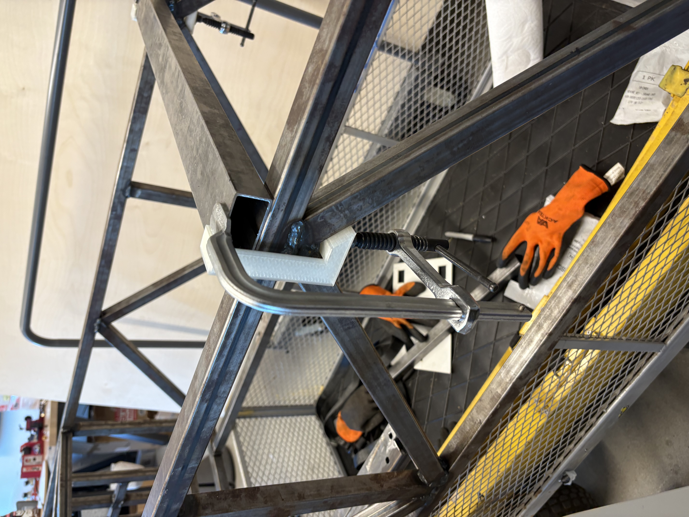

A vehicle subsystem taken from geometry through failure and rebuild, a commercial solar internship, and two independent studies.
Triton Solar Car, UC San Diego, 2025 to present
Ackermann steering system and wheel ergonomics
Full design to fabrication of custom steering geometry for UCSD’s American Solar Challenge car. Ackermann trade study, ANSYS FEA, CNC wood prototyping into steel. Plus the steering wheel control module housing: CAD, printed tolerancing iterations, CNC aluminium backplate.
Geometry trade study, ANSYS FEA, steel fabrication. The part is on the car.
Carport and dual axis tracker PV systems for real clients. Utility bill analysis, Helioscope layout and stringing, BOM, NPV and payback modelling, structural coordination with outside engineers.
Steel fabricationCNC laser cuttingWaterjetFDM 3D printingWeld fixturingDrill press and miter saw
Computation
MATLABPythonPyTorchscikit-learnJavaSQLLogger Pro
In progress
SolidWorks CSWASolidWorks CSWP
About
Now
Sophomore, Structural Engineering, UC San Diego
Team
Triton Solar Car, steering and suspension
Lab
Computational mechanics, ML surrogate models for composites
Next
M.S. Mechanical Engineering
Open to
Internships in design, analysis and fabrication. Industry open.
Based
San Diego, California
I wanted to understand how things actually work. Not in a textbook, but where tolerances matter and the part either fits or it doesn’t.
I’m a sophomore at UCSD, running ahead on credits, with a habit of taking on more than I probably should. So far that has meant steel geometry on a race car, a published paper on refugee camp energy, and a solar PV internship building financial models for clients who aren’t messing around.
Those three don’t have much in common on paper. I took them that way deliberately. Second year is early to pick a lane, and the parts that transfer, constraints and tolerances and knowing what a drawing costs to actually make, transfer everywhere.
The work I’m proudest of is the work that broke. The steering plate cleared my FEA and then failed on the car, because the load case I wrote was bending and the failure was torsional. That correction taught me more than a part that passed on the first try.
Mechanical design, FEA, fabrication, 2025 to present
Ackermann steering system
Team
Triton Solar Car, UC San Diego
Role
Steering and ergonomics
Tools
SolidWorks, Fusion 360, ANSYS, CNC, steel fab
Status
Fabricated and run on the car
SolidWorksANSYS FEAFusion 3603D printingCNC prototypingSteel fabricationTolerancingTrade study
The problem
When a car turns, the inner and outer wheels trace arcs of different radii. Parallel steering makes the outer tyre scrub sideways. Ackermann geometry fixes that, but the real question is how much Ackermann. Full Ackermann minimises scrub at low speed. Partial distributes lateral load better at speed. My task was to run the trade study, pick the number, and build it.
Geometry and iteration
I drew construction lines in SolidWorks from the rear axle centrepoint through each kingpin axis. Tie rod endpoints have to fall on those lines to produce true Ackermann behaviour. Then I iterated tie rod positions, each one producing a different Ackermann percentage, until the scrub against load tradeoff landed at 21.5° inner and 16.8° outer.
The kingpin complication
The suspension team’s kingpin geometry had a Z axis rotation component, not the purely simplified Y axis my initial analysis assumed. First generation car, no prior precedent on the team. I made a documented assumption, proceeded, and built the part.
FEA, and what it missed
ANSYS static structural under what I called worst case combined kingpin loading, a hard turn plus an impact event. Peak von Mises came out at 55,338 psi. I cleared the design.
It failed on the car. The part yielded in torsion, and torsion was not in the load case I had built. The mesh was fine, the solve was fine, the material model was fine. The loading assumption underneath all of it was wrong, so the analysis confirmed a case that never governed. The plate was thickened for the rebuild.
Every load case I have written since starts from a different question. Not which load is easiest to apply, but which failure mode actually governs this part.
A perfect model of a flawed input is still a flawed output.
55,338
psi peak von Mises, bending load case only
21.5°
inner wheel angle at full lock
16.8°
outer wheel angle at full lock
Fabrication
CNC wood prototypes first, fast and cheap to validate fit on the car before touching steel. Once the geometry checked out I recut in steel plate. Tie rod endpoints are the critical tolerance. A few millimetres off changes the effective Ackermann percentage.
Weld jig for the cross bar
Getting the cross bar tabbed in the right place is a fixturing problem, not a welding one. Clamps alone let the bar walk while you are setting up, and once heat goes in the position is permanent. So I cut the bar to length on the horizontal bandsaw, then printed a jig that indexes it off the frame tube. Drop the jig on, clamp through it, and the bar is held square while the tabs go down.

Printed jig indexed off the frame tube

Clamped, cross bar held square to be tabbed
Steering wheel control module
ASC regulations require all controls to rotate with the wheel, so the button module housing had to clip onto the module and turn with the column. The module had an unusual elliptical profile, so I modelled it fully in CAD before printing anything.
My first design was overengineered, solving problems I had not encountered yet. The redesign strips it to the functional core.
Complexity is a liability, not a signal of effort.
Tolerancing when calipers aren’t enough
The usual rule is to measure the physical part, not the spec sheet. The problem here was that several critical dimensions on the button module were geometrically inaccessible: recessed curves and internal features you cannot reach with calipers no matter how you try. Iteration became the measurement tool.
Each print revealed something specific. Mounting holes oversized from shrinkage. Curved faces not seating flush. And a recurring structural issue, inner walls thin enough that the clips would snap off under the force needed to seat the module. The fix was not only dimensional. I varied infill percentage and wall thickness until the part was stiff enough to survive assembly without the critical features breaking.
Final assembly
CNC machined aluminium backplate, dimensioned against the SolidWorks reference. Module clips into the holder, holder mounts to the backplate, backplate bolts to the wheel.
Center for Community Energy
Solar PV design, energy engineering, 2026
Commercial solar PV systems
Organisation
Center for Community Energy
Role
Engineering intern
Tools
Helioscope, AutoCAD, Excel
HelioscopeSolar PV designFinancial modellingNPV and ITC analysisUtility bill analysisStructural coordination
The work
CCE is a San Diego nonprofit accelerating commercial solar adoption. My role was broad: utility bill analysis, Helioscope layout and stringing, financial modelling with NPV, ITC and MACRS, BOM development, and structural coordination with external engineers. One week might be a Viasat safe harbour proposal, the next a load profile analysis for a school district.
Utility bill analysis
Pull interval billing data, map the load profile, identify peak demand timing. This is what makes the financial model defensible.
Production modelling
Helioscope layout, stringing, shading analysis. Dual axis trackers overlaid against facility demand. The overlap is where the savings come from.
Financial modelling
Twenty year NPV analysis: payback period, ITC and MACRS depreciation, O&M escalation. Built to go in front of a client’s accountant.
Humanitarian solar
Independent research, Curieux Academic Journal, 2023 to 2024
Solar PV carport for the Shatila refugee camp
Published
Curieux Academic Journal, page 278
Location
Beirut, Lebanon
Tools
AutoCAD, Global Solar Atlas, Google Earth Pro
AutoCADIrradiance modellingGlobal Solar AtlasGoogle Earth ProCost analysisPublished research
The problem
Shatila refugee camp in Beirut houses roughly 40,000 residents on one to three hours of government electricity per day. After the 2020 explosion, private generator costs became unaffordable. The question: could a solar PV carport at the nearby Camille Chamoun stadium parking lot supply meaningful energy to the camp?
Site analysis
GHI of 1,904.8 kWh/m², optimum tilt 27° south. Strong solar access year round with no significant terrain shading.
Two iterations
First pass used percentage based area estimates, 60 to 100 percent, to bound the output range. Second pass was an actual AutoCAD layout: T configuration carport rows with 2.7 m car lanes, Jinko Tiger Pro 72HC panels at 550 W each, counting every panel that physically fit.
Results
4,736
panels fitted in T configuration carports
4.38
GWh per year estimated output
14%
of the camp’s total energy demand
14 percent is not a complete solution. But in a camp where residents get one to three hours of power a day, a system that changes that is worth costing out. The two barriers are a $2.5 M construction cost and Lebanese government approval for the stadium site.
Sometimes the value of a study is precisely defining what is possible, what it costs, and what stands in the way.
Independent research
Independent research, 2024 to 2025
Rotor swept area and solar tilt studies
Type
Independent research
Period
June 2024 to March 2025
Tools
MATLAB, Logger Pro, 3D printing
MATLABLogger Pro3D printingExperimental designCalculus based optimisationData analysis
Study one, rotor swept area
Does wind turbine power output scale predictably with rotor swept area? I printed a series of variable radius rotors, geometrically identical except for length, and measured voltage and current output against each size using a controlled fan and Logger Pro. R² of 0.794 confirmed the swept area scaling relationship, with nonlinear behaviour at lower wind speeds matching trends in the literature.
0.891
correlation coefficient, radius squared against wattage
59.3%
Betz limit, theoretical maximum efficiency
3
rotor sizes tested at 0.02, 0.04 and 0.06 m
Study two, optimal panel tilt
Fixed angle panels sacrifice energy every month the sun deviates from that angle. I derived the beam irradiation ratio as a function of tilt angle, differentiated to find the monthly maximum, and produced a complete tilt schedule per calendar month, validated against known solar positioning models.